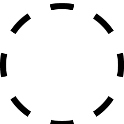
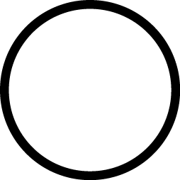

Desired Devices
08.07.20
What will the future of smart devices be? Will they be friend or foe? We don't quite know yet, but that gives us the perfect opportunity to imagine the ideal future. This project is a result of study of building and interacting with objects as a form of critiquing our technological practices today.

Bloom
Growth System
 Emotional
Interaction Stimulated: Connection
Findings: Plant water retention increases with conversation.
As world begins to operate in a more distant way, humans interact with other humans less, but more with objects. This leaves a longing desire to connect with living things. Bloom is a plant growing system that operates on human feelings and provides visual output of the moods and interactions with the user.


MIMS
Friend Bot
Emotional
Interaction Stimulated: Friendship
Findings: When feeling neglected by it's user, MIMS will throw a Bit.
MIMS is a take on ALEXA but better. MIMS came about after most people grew tired of language response agents that could not comprehend or interact beyond questions. MIMS is a voice bot and friend who's algorithm is programmed using your data for maximum friendship compatibility.
Lume
Joy Band
Emotional
Interaction Stimulated: Joy
Findings: Most humans do not realize when they are experiencing true joy.
The paradox of the world moving at a million miles a minute while humans sit at a computer for hours is now more important than ever. It fogs our ability of understanding when we are experiencing joy. Lume is a headband with embedded sensors that give the user a tingling sensation and lights up when feeling joy.


Charged
Energy Patch
Physical
Interaction Stimulated: Energy
Findings: Humans show signs of operating similar to robots when wearing Charged.
Burn out has become a common condition among most humans due to pressures of always being productive. Charged is a human battery patch that provides humans extra fuel for their daily tasks so that they do not burn out.

Breakbot
Thought Visualizer
 Mental
Interaction Stimulated: Clarity
Findings: Many false memories formed by liucid dreams, then forgotten when walking through doorways.
As human adapt be internalize most things, they develop an inability to distinguish between true thoughts, imagined thoughts, recollections from dreams, etc. Breakbot is a thought visualizer that uses a finger sensor to give the user breakdown of which thoughths are true and which aren't.


If you enjoyed th is project please help us to continue exploring new topics by buying our Desired Objects Archive T-shirt.
$20.00
Learn More
Sign up for BITS
Sign up here to never miss a project.